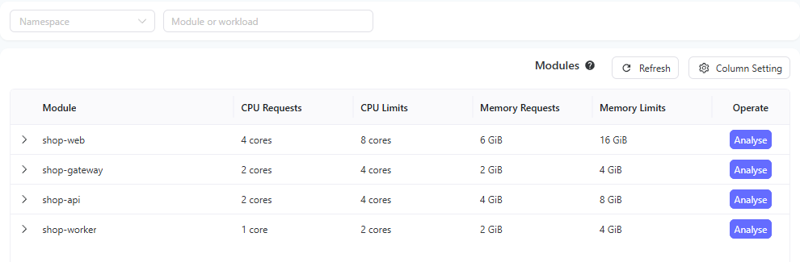
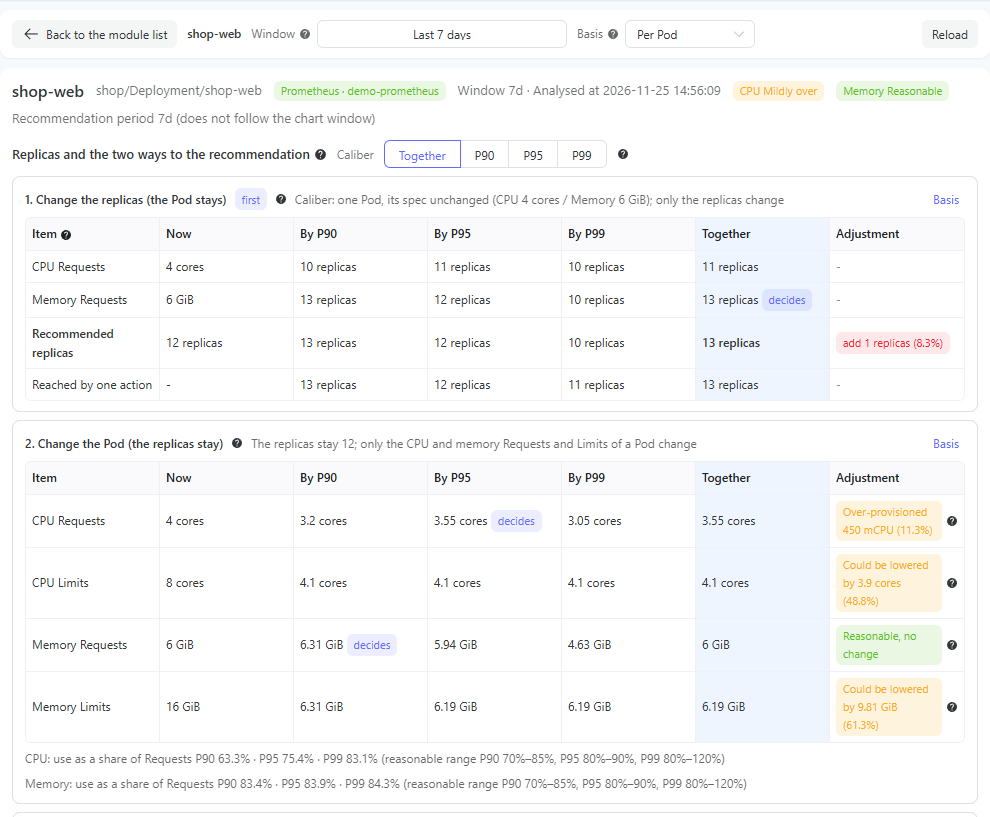
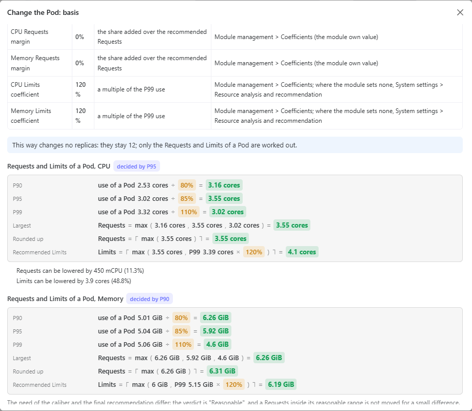
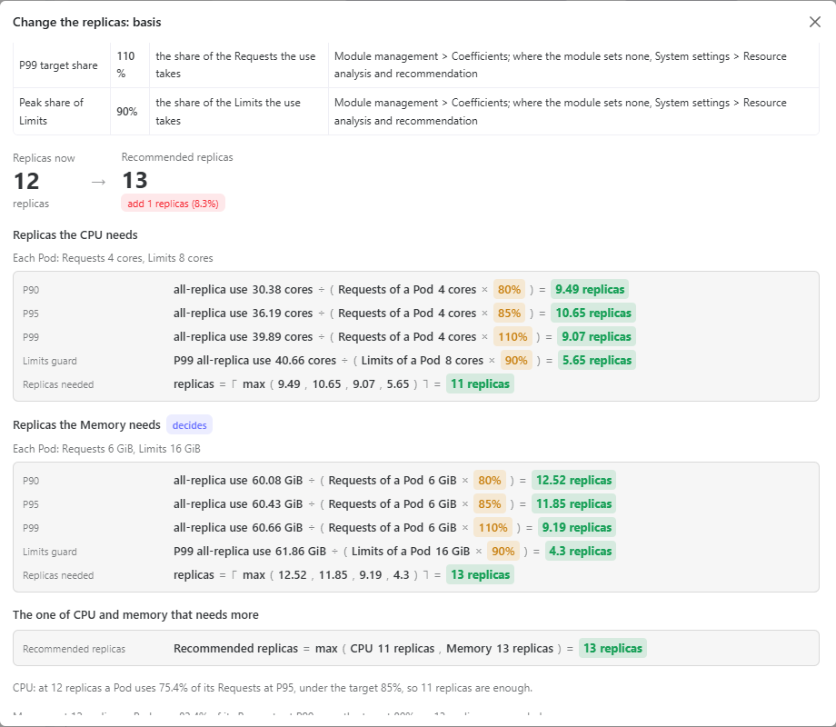
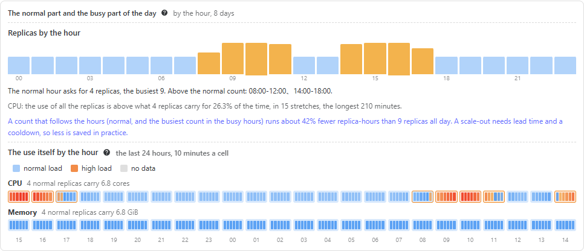
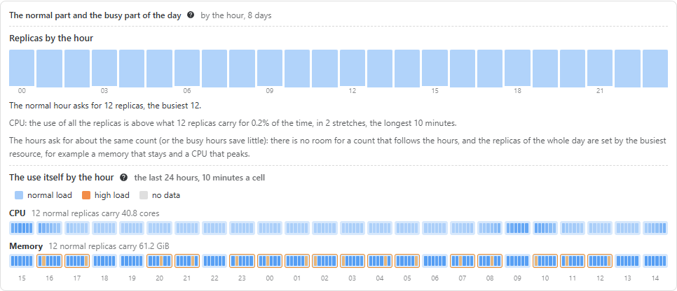
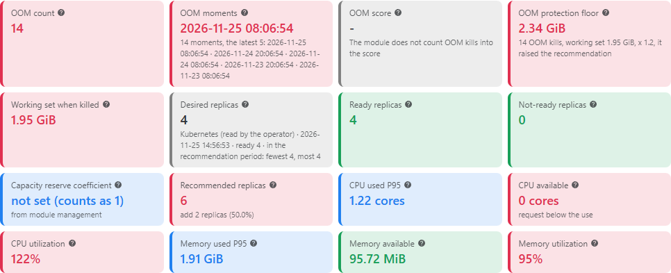
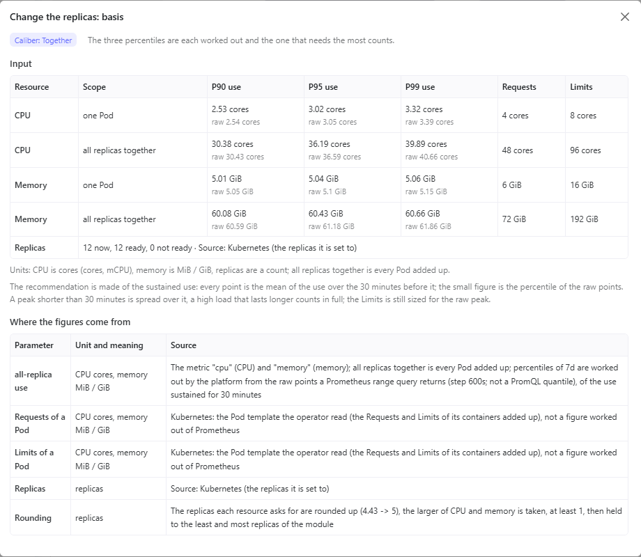
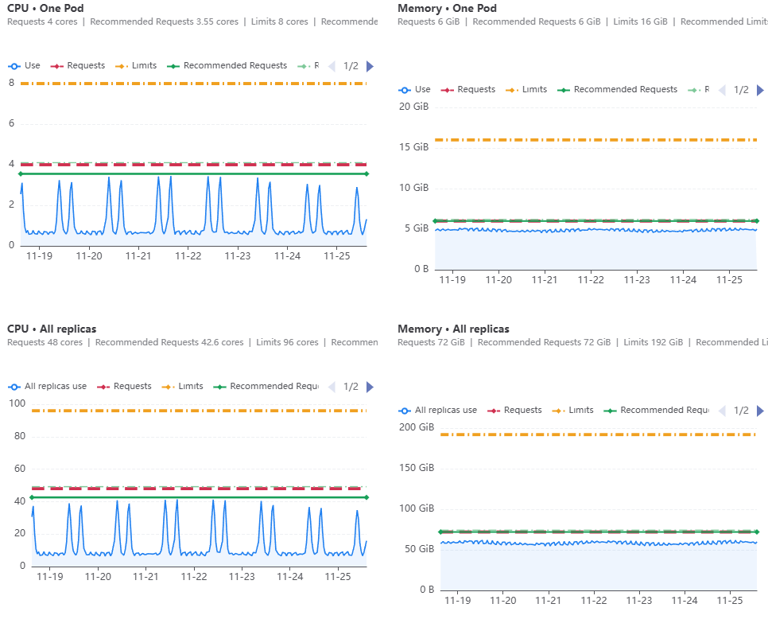

Two levels: pick a module, then read its analysis
Under "Results > Resource dashboard", find a module by namespace or keyword and open its "Module analysis". The page answers three questions: how much CPU and memory each Pod uses now, whether its Requests and Limits fit, and how many replicas are needed. Cluster-wide nodes and Pods are in Cluster dashboard and the Operator report.
The pictures on this page come from a demonstration environment built with simulated data (three modules, a simulated Prometheus and Operator report); the figures only explain the screens and are not any real load.

The dashboard is read-only analysis: it does not forecast, change settings or use samples the platform stored. Every number comes from the PromQL written in the module's metric sources, queried from Prometheus at that moment and calculated by the platform. If one metric times out or has no data, the page says why and the rest is still shown.
Use, current settings, recommendations: kept apart
| What | Source | Notes |
|---|---|---|
| Use and P90, P95, P99 | Prometheus | Measured; never changed by Requests, Limits or any coefficient. |
| Requests and Limits of one Pod now | Kubernetes (the Pod template the Operator reports, containers added up) | With no report they are worked out from Prometheus totals and marked "estimated": the median of the total over the last 6 hours divided by the median of the replicas over the same hours, so the old and new Pods of a rollout do not enter it. An estimate is not the Pod spec; once the Operator reports, the Pod spec counts. |
| Replicas now | spec.replicas in Kubernetes | With no report, the replicas metric of Prometheus; a jump during a rollout (old and new Pods side by side) is not taken as the replicas. |
| Requests and Limits of all replicas | one Pod x the replicas now | For example 12 replicas with a Pod memory Limits of 16 GiB are 192 GiB. |
| Recommendations | worked out by the platform as below | The basis window shows the source, unit, coefficient and rounding of every figure. |
How P90, P95 and P99 are worked out
Percentiles are calculated by the platform from the raw points a Prometheus range query returns, not by a PromQL quantile; the step is written in the source table of the basis window. The span is the "recommendation period" (a system parameter, 7 days by default, one of 1, 7, 15 or 30 days) and does not follow the window of the charts.
The recommended Requests and replicas use the sustained use: every point is the mean of the use over the N minutes before it, N being 30 by default (system parameter analysis.rec_sustain_minutes; a module may set its own among its coefficients; 0 takes the raw points). A peak shorter than the window is spread over it and does not raise a long-term setting; a high load that lasts longer counts in full. For example, 100 scattered points at 4 cores inside a use of 2 cores give a sustained P99 of about 2.3 cores; if the same 100 points are consecutive, the P99 stays 4 cores. The Limits guards against a moment, so it still uses the raw P99.
In the basis the sustained use is the large figure and the raw percentile the small one; it also gives how long the use was above the recommended Requests: the share of time, the number of stretches and the longest one in minutes.
Two ways to adjust, worked out and listed apart
- 1 · Change the replicas (the Pod stays): the Requests of each Pod stay and the replicas are worked out. Recommended first: it changes no Pod setting and the load is shared again by itself.
- 2 · Change the Pod (the replicas stay): the replicas stay and the CPU and memory Requests and Limits of each Pod are recommended. Recommended only when the replicas cannot do it.
Each table has a column for the value now, a column for each percentile ("by P90", "by P95", "by P99") and "Together". The figures in a column are what that percentile recommends, not the measured use; the measured percentiles are in the use table and the charts below. The CPU Requests and Memory Requests of way 1 are of one Pod, as the "?" beside the header says.

Way 2: Requests and Limits of one Pod

- The sustained use at P90, P95 and P99 is divided by the target share of each (80% for P90, 85% for P95, 110% for P99 by default) and the largest is taken.
- If the module sets a Requests margin, it is multiplied by (1 + margin).
- It is rounded up to the step of a spec: CPU to a multiple of 50 mCPU from 1 core, memory to a multiple of 64 MiB from 1 GiB.
- Recommended Limits = max(recommended Requests, raw P99 x Limits coefficient); the coefficient is 120% by default (P99 x 1.2).
The target share is the share of the Requests the use at that percentile takes after the recommendation; it is not a percentage added to the use. With a P95 of 5.11 GiB and a target of 85%, the Requests is 5.11 / 0.85 = 6.01 GiB, which rounds to 6.06 GiB. The tables and formulas show the rounded figure and the figure before rounding is on the line above it. A figure within one step of rounding of the one now counts as no adjustment.
The status comes from where the three percentiles stand against the Requests: by default a reasonable range of 70%-85% for P90, 80%-90% for P95 and 80%-120% for P99; below it is over-provisioned (severe when the excess is 50% or more, moderate from 30%, else mild) and above it under-provisioned; a use that is low most of the time with only an occasional high P99 is judged reasonable and is not lowered for it. The ranges and the grades are system parameters.
The basis states how the Limits relates to the Requests: the multiple now and the multiple recommended; the recommended Limits is never below the recommended Requests. "Can be lowered" is the Limits now minus the recommendation.
Way 1: recommended replicas

- For each percentile: use of all replicas / (Requests of a Pod x target share), CPU and memory apart.
- Each resource is rounded up and the largest of its three percentiles is taken; then the larger of CPU and memory, at least 1.
- Limits guard: P99 use of all replicas / (Limits of a Pod x peak share), 90% by default, so the replicas are never taken so low that the peak runs into the Limits.
- The result is held to the module's least and most replicas. With an OOM kill or CPU throttling in the window the use understates the need, and no replica is removed.
The recommended replicas are exactly this result, without the pace of the module. When the module lets one action change at most N replicas, another row, this action reaches, shows it: with 9 recommended, 12 now and at most 1 removed at a time, the action reaches 11 and it takes 3 actions. The two rows are not mixed, and the basis explains it.
Why so many replicas when the use is not high
Look at which resource decides. For each resource the basis has a line: at N replicas now, how much of its Requests a Pod uses against the target. For example a memory P95 of 60.71 GiB for all replicas, a Pod Requests of 6 GiB and a target of 85% give 60.71 / (6 x 0.85) = 11.9, rounded to 12. A Pod's P95 of 5.11 GiB is 85.2% of its Requests, which is the target; total memory does not shrink with the replicas, so with fewer replicas every Pod carries more and goes over the target. Even if CPU alone needs 9 to 11, memory sets the count for the whole day.
For fewer replicas, raise the memory Requests of a Pod (way 2: the same total in bigger Pods) or lower the target share, and weigh the OOM risk.
OOM, throttling and protections
- OOM score = 100 x (1 - kills x weight); it is the memory score of a forecasting algorithm and changes which algorithm is followed. It does not change the recommendation of the dashboard.
- The OOM protection floor does: with an OOM kill in the window the memory Requests is not below max(working set at the kill x OOM protection coefficient, Requests now), and no replica is removed. The card and the basis give the kills, the working set, the coefficient and whether the recommendation was raised.
- CPU throttling above the limit (a system parameter, 5% of the time by default) means the use understates the need: no over-provision verdict, no lowering, no replica removed.
The normal and the busy hours


A P95 alone can spread a load of a few hours a day over the whole day. This block takes the sustained use of all replicas apart by the hour of the day (in the module's time zone): for each hour the P95 over every day is divided by the Requests of a Pod and the target share and rounded up, which is what that hour asks for. The hour in the middle of the 24 is the normal count, the largest is the busiest, and the hours above normal are the busy hours; it also estimates how many replica-hours a count that follows the hours would save over keeping the busiest count all day. When the hours ask for about the same, the page says there is no room (for example when a memory that stays sets the count).
Below, "The use itself by the hour" shows the last 24 hours: 24 blocks, each cut into cells of 5 or 10 minutes, CPU and memory in a row each. A cell is the mean use of all replicas in that time, coloured by its share of what the normal count of replicas carries: blue is the normal load (deeper nearer the limit), orange to red is a high load, grey is no data; the ground of a block is the mean of its cells, and an hour with a high-load cell has an orange border. Hovering shows the time, the use and the share.
A count that follows the hours is set as a "period" in the module (see Decision modes and strategies); the dashboard only estimates and does not create one. The cell size follows the step of the metric query: 5 or 10 minutes when the step is not coarser than 10, else that step. With less than 2 days or no use of all replicas, the block is not shown.

The basis window
The "basis" of each way gives: the input table (P90, P95, P99 use, Requests, Limits and replicas, for one Pod and for all replicas, with their sources), the source table (metric, unit, window and whether it is held, for every symbol), the rounding, the rule of the larger, the pace, the multiple of Limits to Requests, the time above the recommended Requests and the OOM protection. Every coefficient comes from module management (a module that does not set one follows the system setting); see Module settings.

Reading the charts
One chart for CPU and one for memory, switchable between one Pod and all replicas: blue is the use, red the Requests and orange the Limits (drawn with the same width), green the recommended Requests and light green the recommended Limits, dotted lines P90, P95 and P99. Lines on one value (such as a recommendation equal to the Requests now) are drawn as stripes, each showing at its edge.

AI analysis and mail
The AI helper at the lower right starts only when "AI analysis" is pressed: it uses the platform's language model on this measured data, writes its own recommended configuration and replicas and says how it differs from the platform's. Opening the page or the window starts nothing, an earlier answer is not kept, and nothing is changed.
The answer can be mailed to the signed-in user. The subject is "cluster · namespace/module · period", and the body starts with three tables: the module and workload (cluster, namespace, module, workload, Pods, data source), the Pods (name, node, phase, ready, restarts) and how the module has been running (replicas, CPU and memory use and verdict, OOM, throttling); then come the replica ways and the configuration comparison, so a mail always belongs to one module. The cluster and Pod names come from the Operator report; with none, the cluster is the data source name, said as such, and the Pods say "no Pod information". Mail needs Email (SMTP) set up first.
Limits of use
- Exact Pod Requests, Limits, replicas, cluster name and Pod names need the Operator report; without it they are estimates and the page says so.
- The Operator has been tested only with a fake client, not on a real cluster; the dashboard calculation was verified with synthetic data and a simulated Prometheus, and the defaults (the 30-minute window and the 7-day period) need tuning to each module's load.
- The ways are advice. Writing is authorized by the module's mode, the global switches and the Operator together; see Admission and scaling.